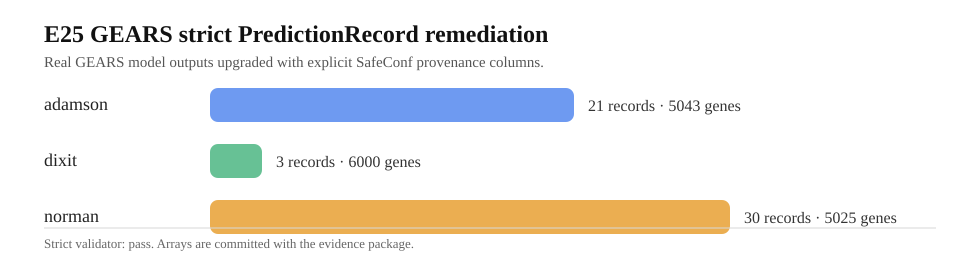

E25 GEARS strict PredictionRecord remediation
把已有真实 GEARS formal 输出补齐严格 SafeConf provenance，合并为可校验证据包。
54
PredictionRecords
3
GEARS datasets
9
formal runs
PASS
strict validator
E25 不重新训练、不改误差数值；只做合同修复、数组合并、gene order hash 绑定和严格验证。

数据集汇总
| dataset_name | n_runs | n_prediction_records | n_genes | mean_rmse | median_rmse | min_rmse | max_rmse |
|---|---|---|---|---|---|---|---|
| adamson | 3 | 21 | 5043 | 0.042086 | 0.034761 | 0.022992 | 0.112453 |
| dixit | 3 | 3 | 6000 | 0.424841 | 0.371982 | 0.355655 | 0.546885 |
| norman | 3 | 30 | 5025 | 0.055878 | 0.045537 | 0.030096 | 0.089127 |
每个 run
| dataset_name | seed | source_run_dir | n_prediction_records | n_predicted_arrays | n_true_arrays | n_genes | gene_panel_id | gene_order_hash | mean_rmse | median_rmse | min_rmse | max_rmse | mean_gears_confidence |
|---|---|---|---|---|---|---|---|---|---|---|---|---|---|
| adamson | 1 | $SAFECONF_RUNTIME/outputs/gears_prediction_records_formal/adamson/seed_1 | 7 | 7 | 7 | 5043 | gears::adamson::single::n_genes_5043 | sha256:8b461482a501bc0fa4966cf0d6ba0a20365560359528edf44ab7876dc831278d | 0.038754 | 0.030122 | 0.022992 | 0.072577 | NaN |
| adamson | 2 | $SAFECONF_RUNTIME/outputs/gears_prediction_records_formal/adamson/seed_2 | 7 | 7 | 7 | 5043 | gears::adamson::single::n_genes_5043 | sha256:8b461482a501bc0fa4966cf0d6ba0a20365560359528edf44ab7876dc831278d | 0.040625 | 0.044873 | 0.023050 | 0.054869 | NaN |
| adamson | 3 | $SAFECONF_RUNTIME/outputs/gears_prediction_records_formal/adamson/seed_3 | 7 | 7 | 7 | 5043 | gears::adamson::single::n_genes_5043 | sha256:8b461482a501bc0fa4966cf0d6ba0a20365560359528edf44ab7876dc831278d | 0.046878 | 0.034761 | 0.024809 | 0.112453 | NaN |
| dixit | 1 | $SAFECONF_RUNTIME/outputs/gears_prediction_records_formal/dixit/seed_1 | 1 | 1 | 1 | 6000 | gears::dixit::single::n_genes_6000 | sha256:09cfde75cdbdbdc2f6f496e5fa2cdfb4b9dfd758f582c2212777c2dd525b66e3 | 0.546885 | 0.546885 | 0.546885 | 0.546885 | NaN |
| dixit | 2 | $SAFECONF_RUNTIME/outputs/gears_prediction_records_formal/dixit/seed_2 | 1 | 1 | 1 | 6000 | gears::dixit::single::n_genes_6000 | sha256:09cfde75cdbdbdc2f6f496e5fa2cdfb4b9dfd758f582c2212777c2dd525b66e3 | 0.355655 | 0.355655 | 0.355655 | 0.355655 | NaN |
| dixit | 3 | $SAFECONF_RUNTIME/outputs/gears_prediction_records_formal/dixit/seed_3 | 1 | 1 | 1 | 6000 | gears::dixit::single::n_genes_6000 | sha256:09cfde75cdbdbdc2f6f496e5fa2cdfb4b9dfd758f582c2212777c2dd525b66e3 | 0.371982 | 0.371982 | 0.371982 | 0.371982 | NaN |
| norman | 1 | $SAFECONF_RUNTIME/outputs/gears_prediction_records_formal/norman/seed_1 | 10 | 10 | 10 | 5025 | gears::norman::single::n_genes_5025 | sha256:9059bd6e8ff28482b90f1dd4dd423df7e1990b35f9a8ad5b4b6aee9ef0eb7ed0 | 0.070690 | 0.067833 | 0.049006 | 0.089127 | NaN |
| norman | 2 | $SAFECONF_RUNTIME/outputs/gears_prediction_records_formal/norman/seed_2 | 10 | 10 | 10 | 5025 | gears::norman::single::n_genes_5025 | sha256:9059bd6e8ff28482b90f1dd4dd423df7e1990b35f9a8ad5b4b6aee9ef0eb7ed0 | 0.051245 | 0.045537 | 0.030096 | 0.077489 | NaN |
| norman | 3 | $SAFECONF_RUNTIME/outputs/gears_prediction_records_formal/norman/seed_3 | 10 | 10 | 10 | 5025 | gears::norman::single::n_genes_5025 | sha256:9059bd6e8ff28482b90f1dd4dd423df7e1990b35f9a8ad5b4b6aee9ef0eb7ed0 | 0.045701 | 0.042120 | 0.035489 | 0.066836 | NaN |
严格校验
| scope | strict | issue_count | issues |
|---|---|---|---|
| combined_e25_gears_strict_package | True | 0 |
怎么用于下一步
这个包可以作为真实 GEARS 模型基线进入后续 SafeConf 评分流程。下一步要做的是：把 GEARS 与另一个预测器在同一任务空间对齐，或者构造 leave-one-dataset / leave-one-perturbation 的风险排序评估。